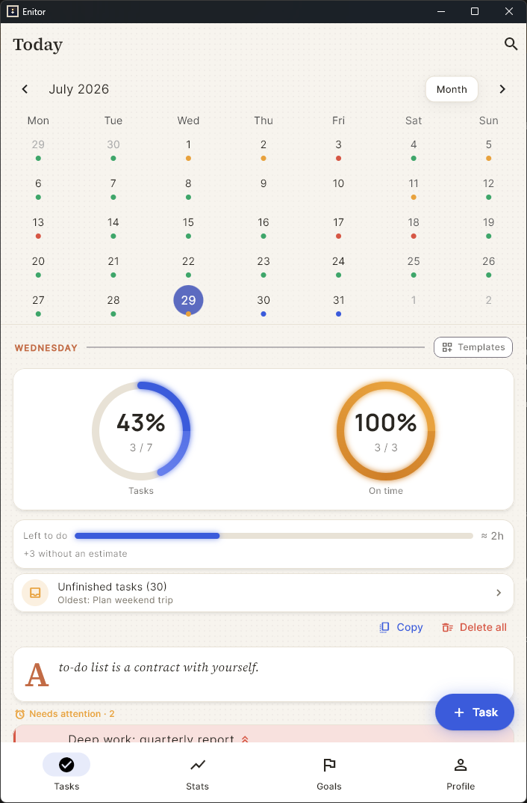
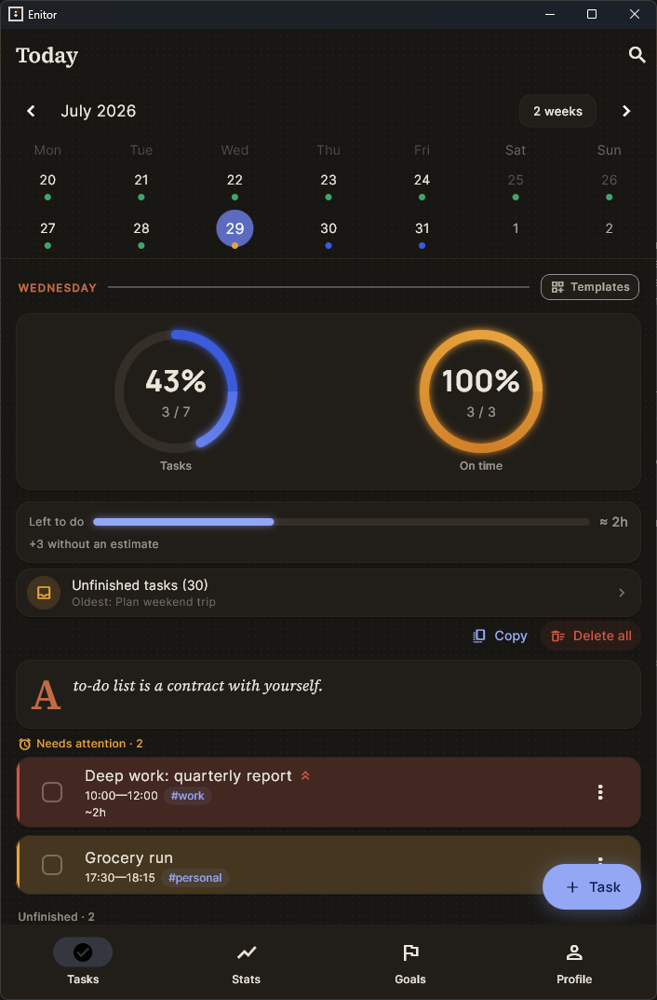

Enitor
Staying out of your way isn't the goal.
Getting better is.
Tasks, goals, and productivity stats honest enough to act on. One app for Windows and Android — fully local, no account, no cloud, no telemetry.


Most productivity apps aim for one thing: stay out of your way. Log a task, check it off, forget it. That's the premise Enitor argues with. A task list is only useful if it eventually shows you something about yourself — that you're more consistent than you think, that your estimates are always 20% short, that Tuesdays are where you fall off.
Enitor is built to surface that instead of hiding it behind a clean checklist. Everything below follows from that one decision.
The journey of a thousand miles begins with a single step.
— Lao Tzu, one of the quotes bundled with the app
What you get
Five things most trackers don't do
Not a feature checklist — the parts that change how a week actually goes.
A weekly retrospective that comes to you
Monday evening by default, Enitor opens the week that just ended — you don't have to remember to go looking for it.
- Productivity measured against the week before that one
- Your best day, and how many days were perfect
- The goals you'd actually set for that week
- Whether your estimates got closer or further off
- No data for that week — no window. It never nags for nothing.
Estimate accuracy that makes you better at planning
Planned time versus actual time, closed into a loop most trackers never close — so you eventually learn that you're not bad at working, you're bad at guessing.
- Measured both by task count and by time weight
- Broken down by tag — the "#work is always 40% over" kind of insight
- A matching card for goals: how well you hit your own deadlines
- Charts at any granularity and range, productivity against on-time rate
Goals across four horizons
Week, month, season, year — the same structure as tasks, so a year's ambition and today's checklist live in one place instead of two apps.
- Counter progress ("read 12 books") and subtask checklists
- A grace period after a period ends — a week's goals stay closable through Tuesday
- Unachieved goals go to a backlog instead of quietly disappearing
- Goals appear in the statistics and the weekly retrospective too
Carry-over that's never silent
At the 4:00 AM day boundary Enitor asks what to move forward, copies it onto today, and leaves the original in its own day with a small arrow badge.
- History is never rewritten — which is what makes the stats above trustworthy
- Missed the moment? A catch-up sheet lets you pick from what was left behind
- Days with no tasks are neutral, not red; empty future days are blue, not red
- Streaks are fair: empty days neither break nor pad them, and today never breaks one while it's still open
A year you can see at a glance
A GitHub-style heatmap turns months of effort into one picture — the kind of feedback that makes consistency feel real instead of abstract.
- Daily streak, plus your productivity delta against last week
- Achievements for volume, consistency, punctuality and milestones
- Top-tier ones stay hidden as "???" until you earn them
- Pomodoro sessions log themselves as real time spent, feeding the same stats
The fundamentals
Details you only notice when they're wrong
The day starts at 4:00, not midnight
Working late doesn't flip your "today" out from under you. Finish a task due at 2:00 AM at 1:30 and it counts as on time — not as yesterday's task, done late.
Reminders that stay quiet
General reminders only fire when you actually have unfinished tasks. Backlog nudges twice a week, goals once a month. Nothing arrives just because a clock ticked.
Genuinely yours
No account, no cloud, no telemetry. Everything lives in local storage; manual export and import cover backups and moving to a new device.
Updates without a store
The app checks GitHub for new releases and installs them itself. No gatekeeping, no forced updates, and your data is untouched by the process.
Russian and English
Fully localised both ways, with an instant language switch — no restart, and notifications follow the choice too.
A design system, not a coat of paint
Warm paper surfaces, ink-coloured shadows, one sparing accent, a checkbox stroke that draws itself. Every choice answers to a single metaphor, documented down to the hex code.
Screenshots
The rest of the app
From the Windows build, on generated demo data rather than a real personal task list. Click any of them to read the fine print.
Install
Two platforms, one codebase
No installer, no store, no account. Both builds come from the same release.
Windows
Portable build — a folder you can put anywhere.
- Download
enitor-vX.Y.Z-windows.zip - Unpack it wherever you like
- Run
enitor.exe
Unsigned builds sometimes worry antivirus software. If yours objects, add enitor.exe to its trusted list.
Android
A single APK covering arm64, arm32 and x86_64.
- Download
enitor-vX.Y.Z.apkon the phone - Allow installing from your browser or file manager when asked
- Open it — later updates install from inside the app
Android asks for that permission once, for any app installed outside the Play Store.
Under the hood
Built to be read, not just used
Flutter and Riverpod, a repository layer over local storage, and a covering test suite. Windows and Android get the same features and the same fixes at the same time — not a phone app in a resized desktop wrapper.